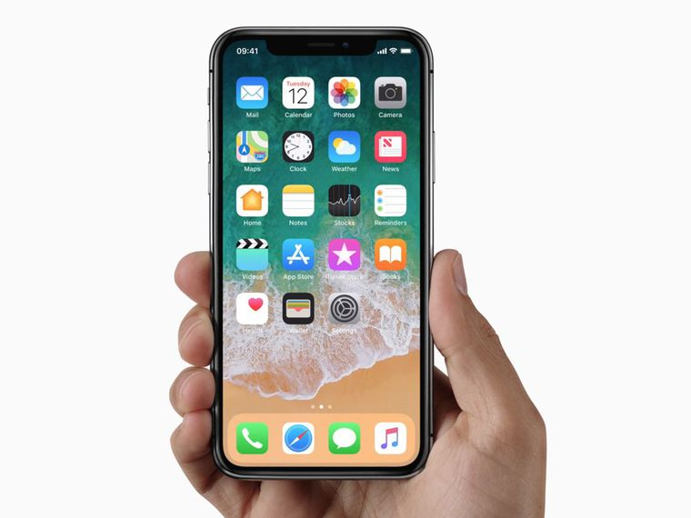
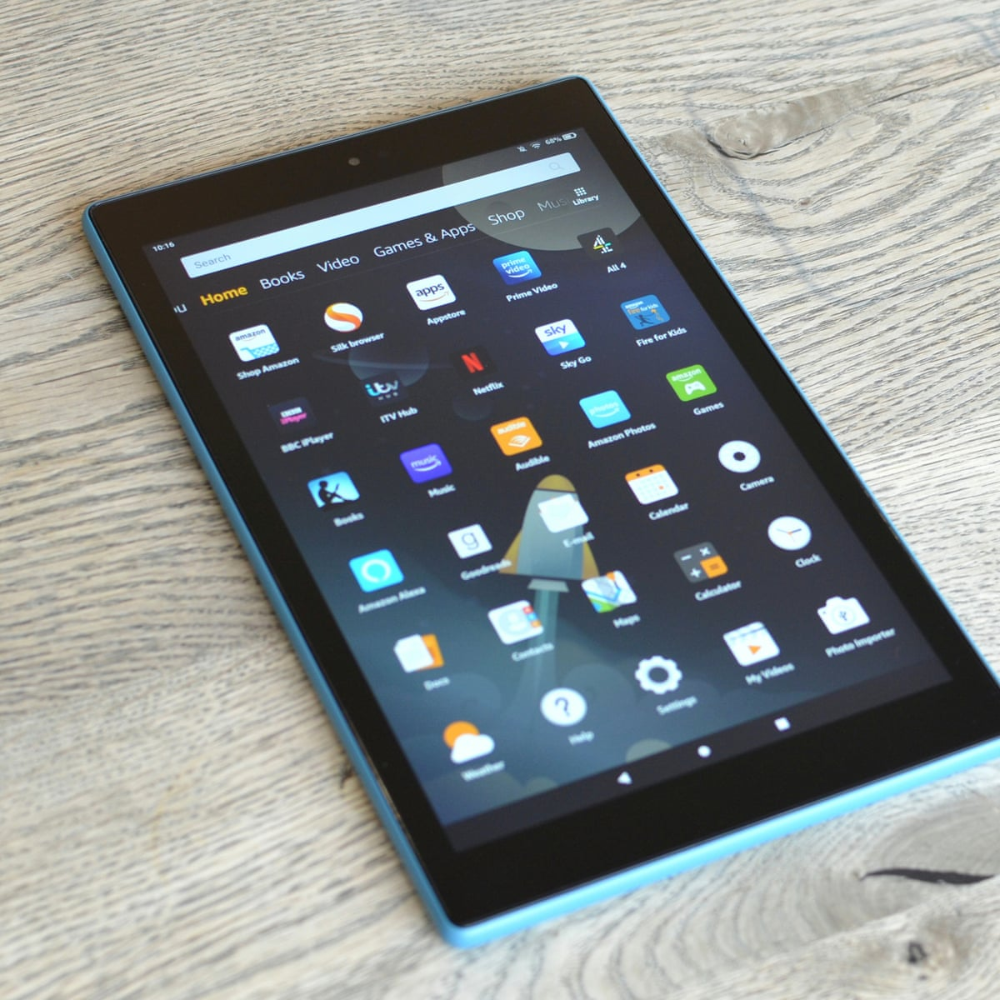
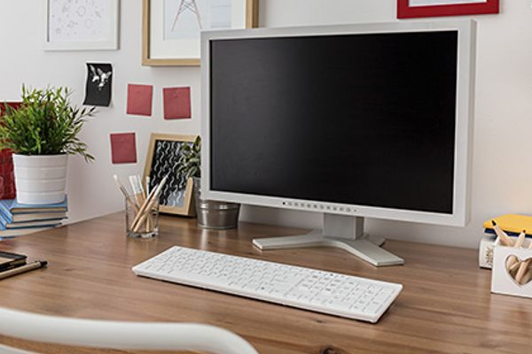

My Mobile Design
First, I created my mobile design for this web page. I wrote the html and css to fit a mobile device. I decided to make the header white on a green background above main section, which consists of articles about the three designs I made for this web page. For mobile, I kept it simple with a header and article with an image below them.
My Tablet Design
For my tablet design, I changed the positions of the images. If I left the images how they were, they would have gotten too big for the page. Instead, I set the images to the right side of the paragraph text at a smaller size. I did this by using a grid for the divs I put around each article section.
My Desktop Design
Finally, I made a design for a laptop or desktop computer. I changed the format again, so the articles' text wouldn't get stretched too thin next to their images. I separated the articles into three separate columns and put the images below the text. This is similar to the mobile design, but there are three columns for the articles rather than just one. I also fixed the maximum width of the body, so everything would stop growing for anyone with a very large monitor.
